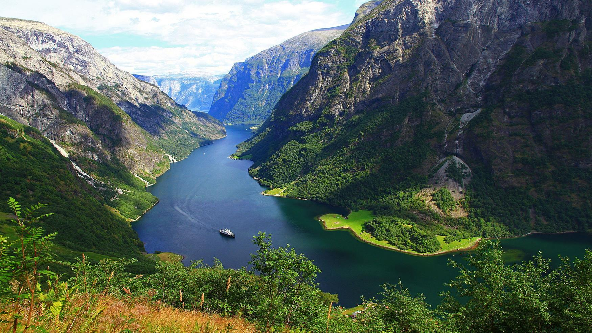

Нэрёй-фьорд
Нэрёй-фьорд включен в Список природного наследия ЮНЕСКО и имеет много общего с Гейрангер-фьордом. Например, на нем встречаются места, намного более узкие, чем на Аурландс-фьорде и Согне-фьорде (кое-где его ширина не превышает 250 метров), а по его берегам высятся величественные горы со множеством водопадов. Высоко наверху вы можете заметить крошечные традиционные фермы и другие постройки. Протяженность: 18 километров